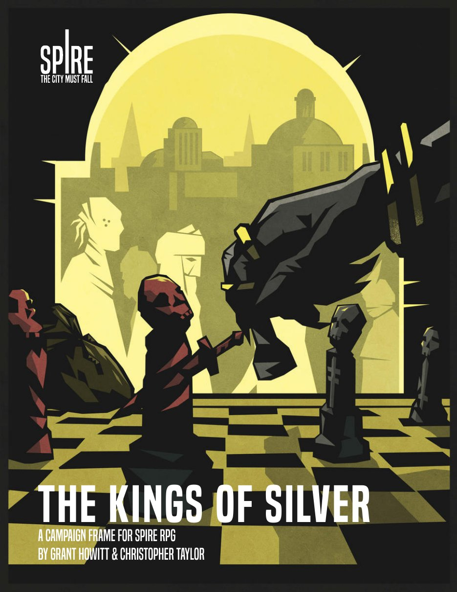
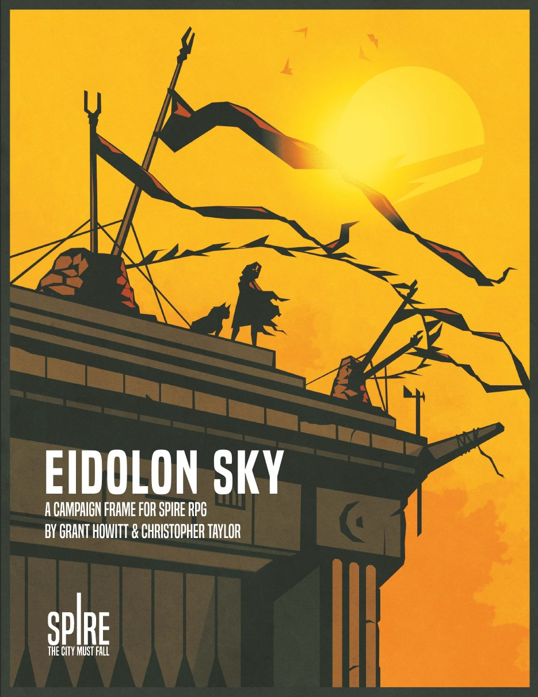

Einstiegsabenteuer

Quickstart S. 18Snuff Out the Sun
Rituelle Hinrichtung des Erzbischofs der Sonnenkirche.
6 Figuren5 Tage
Kampagnenrahmen

46 SeitenThe Kings of Silver
Das Silberviertel fällt – von einem Casino aus.
SilberviertelMinisterium

30 SeitenEidolon Sky
Dreck, ein Serienmörder und ein Dämonenvorfall.
6–10 Sitzungen5 Figuren
in VorbereitungBlood and Dust